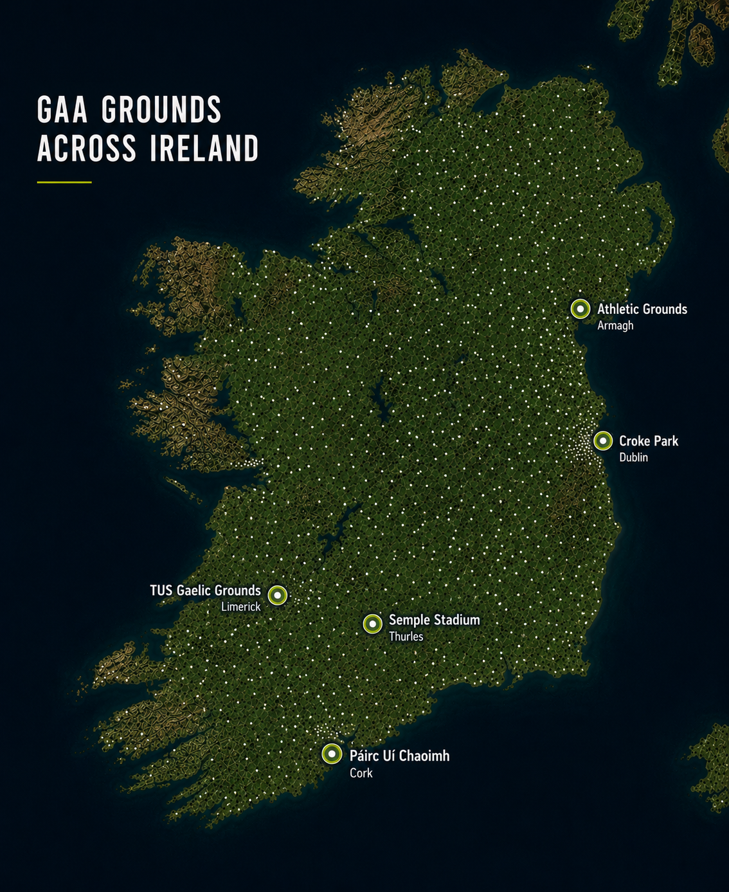
Explore the Grounds
Every Field. Every Club. All of Ireland.
More than 2,000 GAA grounds connect communities across Ireland. The pitches featured here represent just a small sample of the remarkable places where Gaelic games are played.

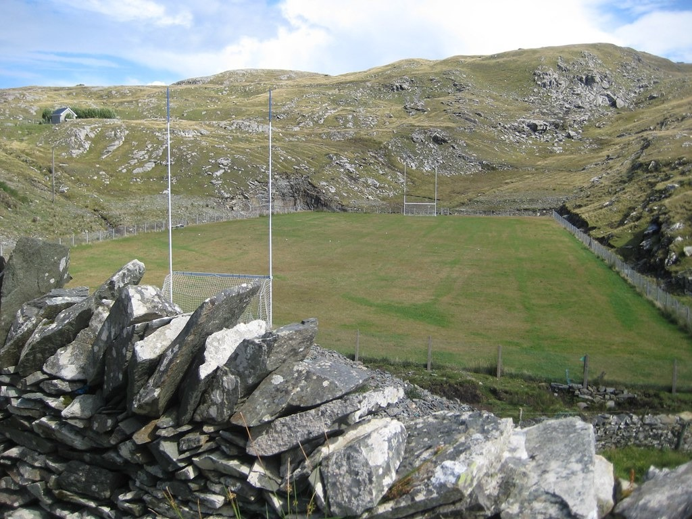

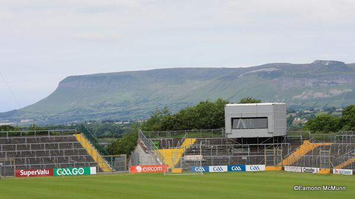


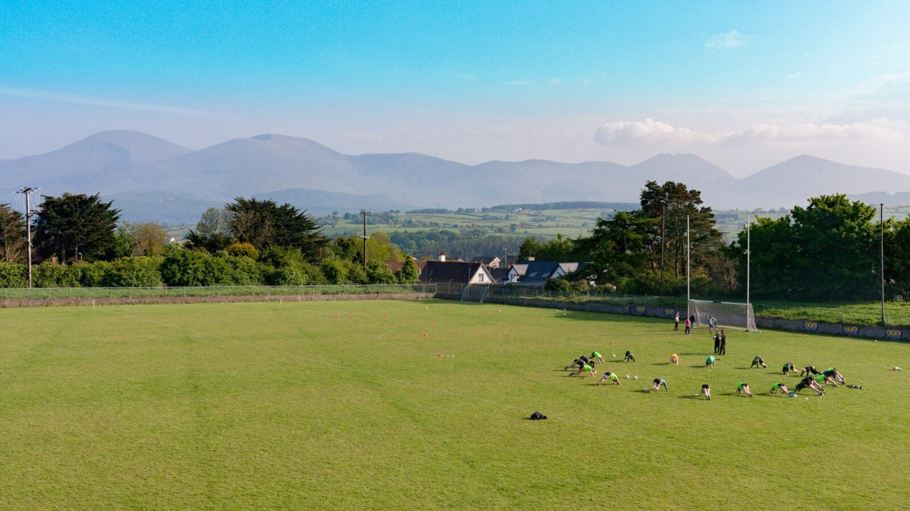
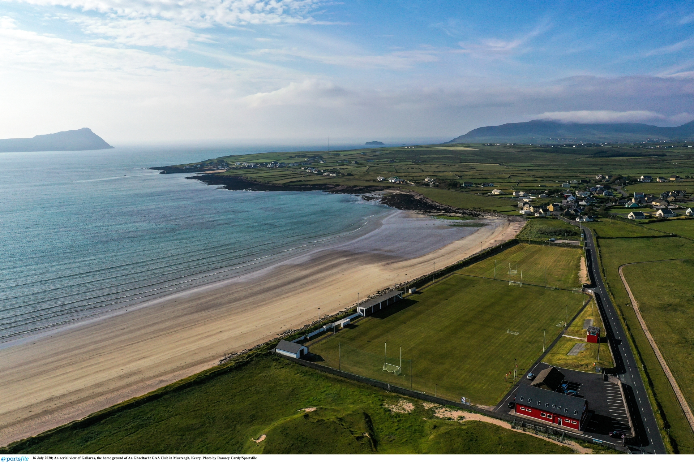
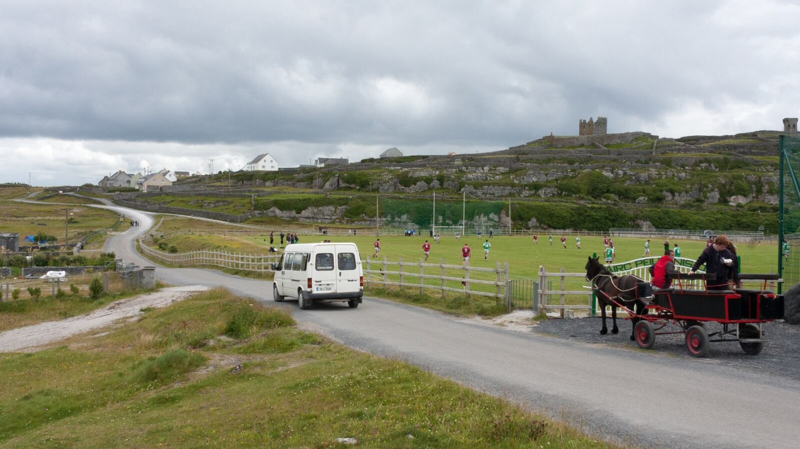
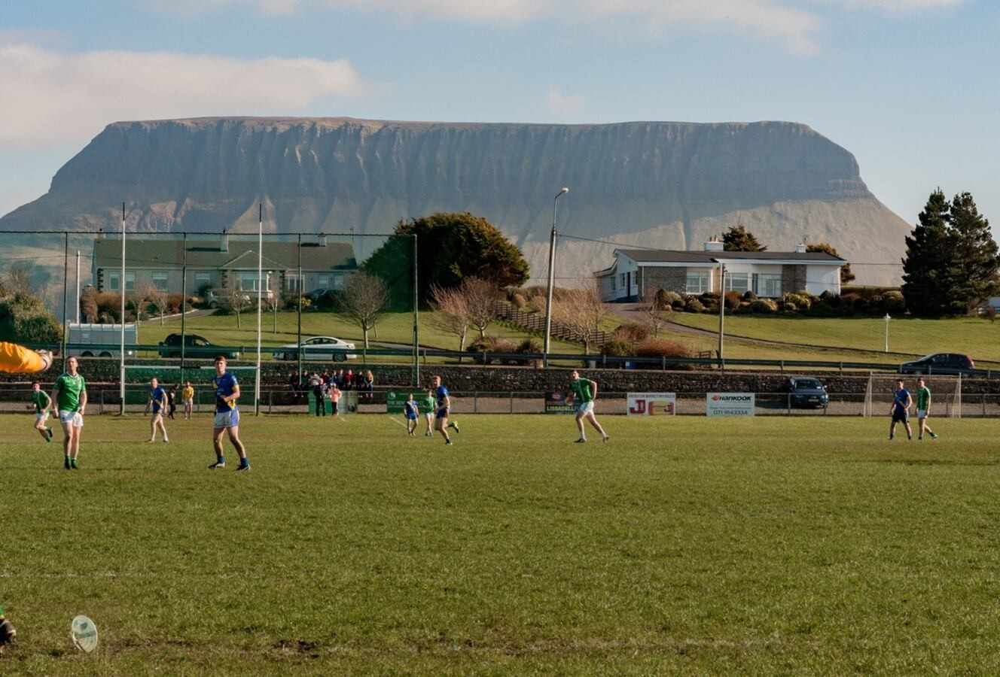
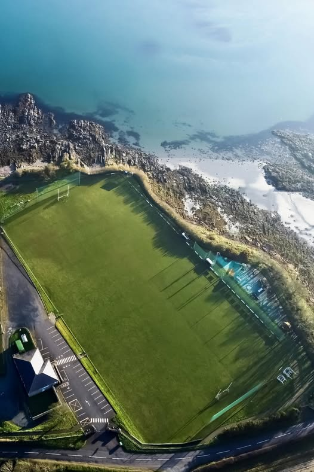
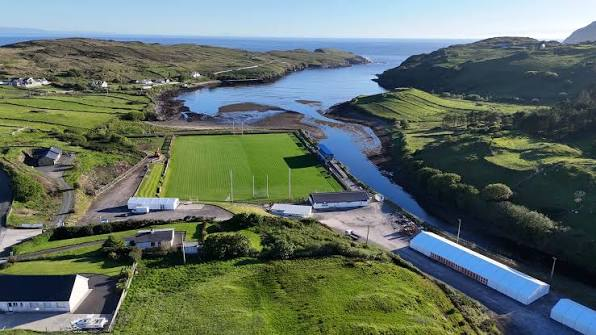
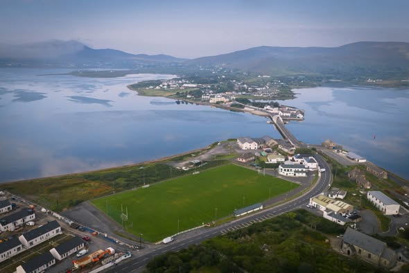

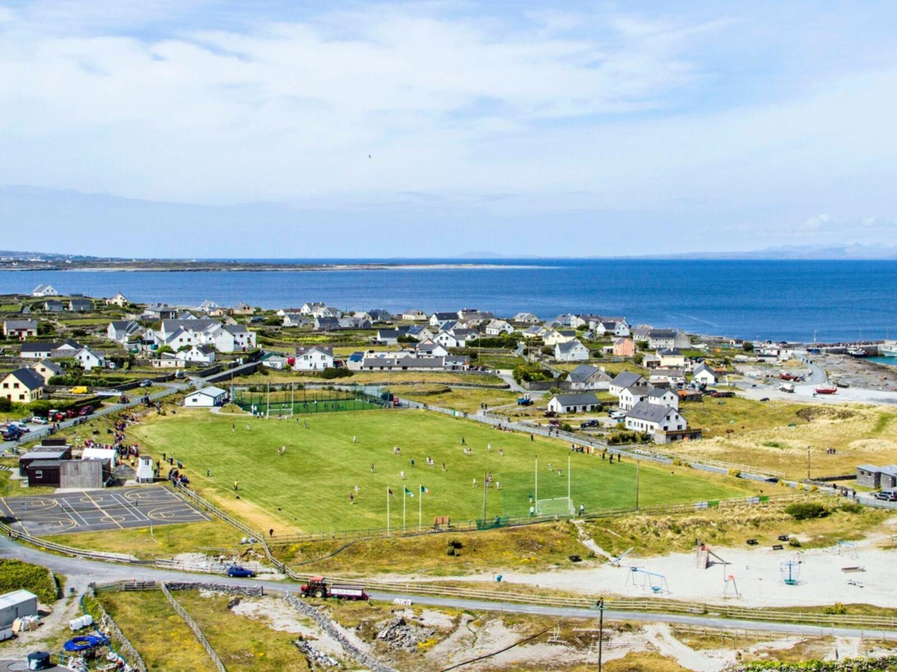